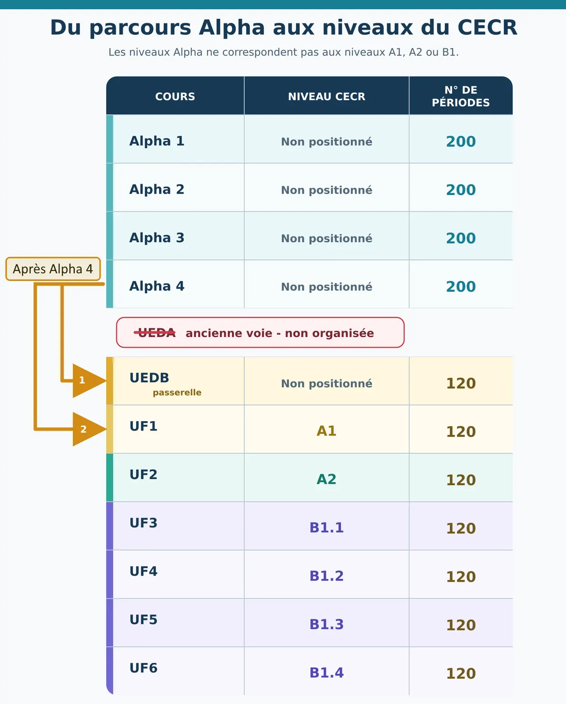
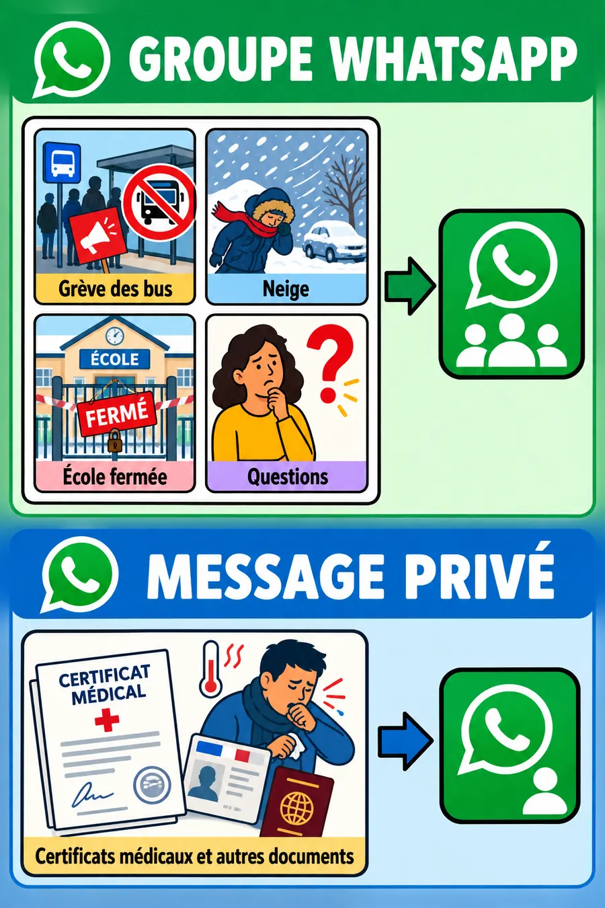
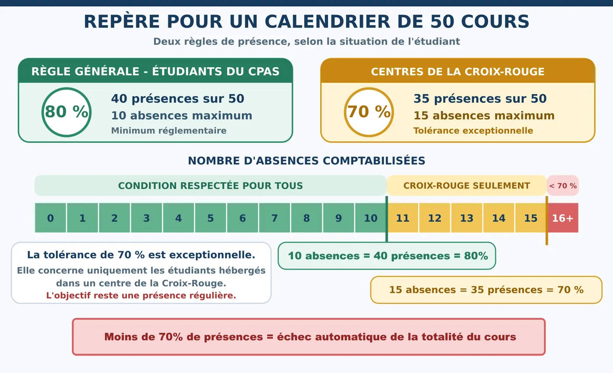
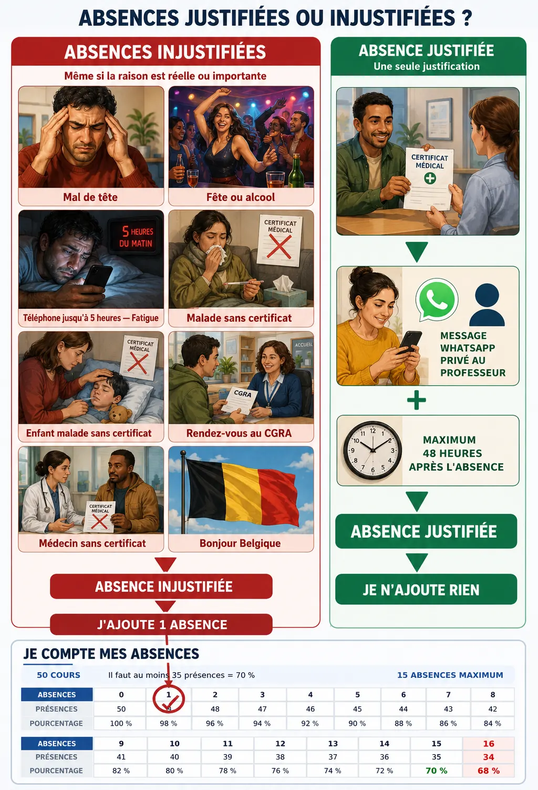
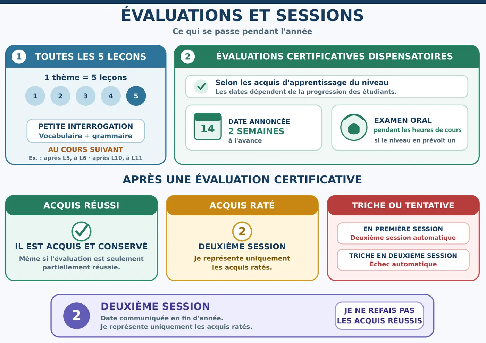
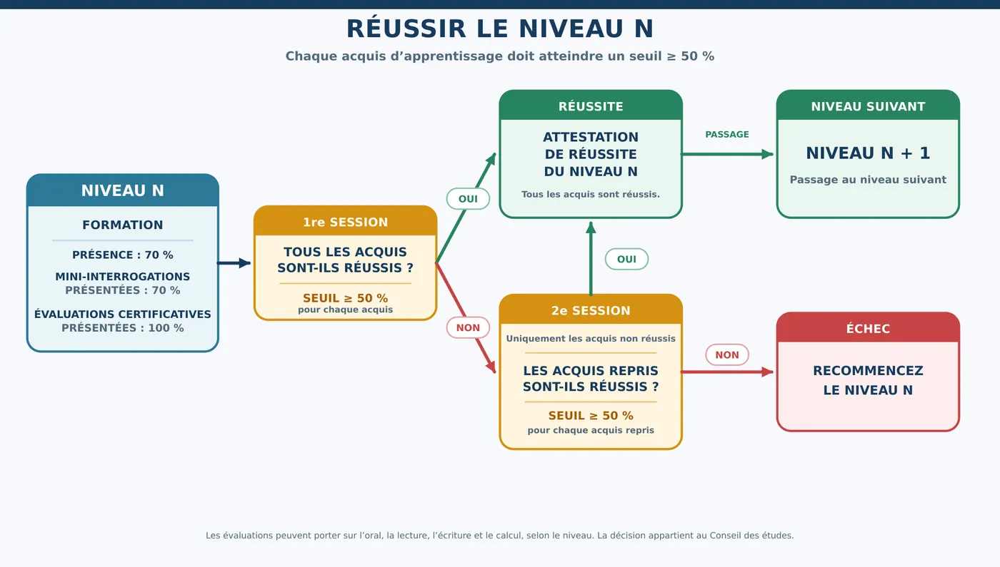

1. L'école et les horaires
Où, quand, avec quel groupe.
IPEFA de Seraing — Site OVA Remouchamps
Bibliothèque de Sougné-Remouchamps
Rue de la Reffe 9, 4920 Remouchamps
Cours les lundis, jeudis et vendredis.
Horaires
| Groupe | Cours | Pause |
|---|---|---|
| Alpha 3 | 8 h 50 – 12 h 10 | 10 h 20 |
| Alpha 4 | 12 h 50 – 16 h 10 | 14 h 20 |
- J'arrive quelques minutes avant le début du cours.
- Si je suis en retard, je préviens le professeur par message privé.
- Une adaptation liée à un bus doit être convenue avec le professeur. Elle ne devient pas une autorisation générale d'arriver en retard ou de partir plus tôt.
Jours sans cours annoncés en 2026–2027
| Période | Date |
|---|---|
| Vacances d'automne (Toussaint) | Du lundi 19 au vendredi 30 octobre 2026 |
| Fête des morts | Lundi 2 novembre 2026 |
| Commémoration de l'Armistice | Mercredi 11 novembre 2026 |
| Vacances d'hiver (Noël) | Du lundi 21 décembre 2026 au vendredi 1ᵉʳ janvier 2027 |
| Congé de détente | Du lundi 22 février au dimanche 7 mars 2027 |
| Lundi de Pâques | Lundi 29 mars 2027 |
| Vacances de printemps | Du lundi 26 avril au dimanche 9 mai 2027 |
| Lundi de Pentecôte | Lundi 17 mai 2027 |
Toute modification est communiquée dans le groupe WhatsApp. Gardez aussi le calendrier officiel de l'école : il peut mentionner d'autres congés ou changements exceptionnels. L'horaire papier détaillé reste le document pratique de référence.
2. Le parcours et la méthode
Du parcours Alpha aux niveaux du français, et comment nous travaillons.
- Alpha 1, Alpha 2, Alpha 3 et Alpha 4 sont des niveaux d'alphabétisation.
- Ils ne correspondent pas automatiquement aux niveaux A1, A2, B1 ou B2 du CECR (Cadre européen commun de référence pour les langues).
- Alpha 1 n'est pas A1. Alpha 2 n'est pas A2. Il n'existe pas de niveau « A3 » dans le CECR.
- Après Alpha 4, le Conseil des études peut orienter l'étudiant vers l'UEDB (passerelle) ou directement vers l'UF1, selon les acquis.

| Cours | Niveau CECR | Périodes |
|---|---|---|
| Alpha 1 | Non positionné | 200 |
| Alpha 2 | Non positionné | 200 |
| Alpha 3 | Non positionné | 200 |
| Alpha 4 | Non positionné | 200 |
| UEDB (passerelle) | Non positionné | 120 |
| UF1 | A1 | 120 |
| UF2 | A2 | 120 |
| UF3 | B1.1 | 120 |
| UF4 | B1.2 | 120 |
| UF5 | B1.3 | 120 |
| UF6 | B1.4 | 120 |
L'UEDA (ancienne voie) n'est plus organisée. Un niveau Alpha compte 200 périodes : davantage de temps pour apprendre à lire et à écrire. Une UF compte 120 périodes, souvent réparties sur moins de jours de cours par semaine.
Le matériel : deux cahiers
| Cahier | Utilisation |
|---|---|
| Cahier de classe | Textes, vocabulaire, exercices, corrections, productions et traces des apprentissages. |
| Cahier d'exercices | Exercices supplémentaires, essais et entraînement régulier à la maison. |
Je note la date et le titre à chaque nouvelle page.
S'autocorriger
- Je fais l'exercice sans regarder la réponse.
- Je compare ma réponse au corrigé ou au modèle.
- Je repère précisément l'erreur.
- Je corrige de manière visible, si possible dans une autre couleur, sans effacer toute ma première réponse.
- Je recommence un exemple similaire et je demande une explication si je ne comprends pas.
Recopier directement le corrigé ne permet pas de voir ce que je sais faire. Une erreur conservée puis corrigée aide à apprendre.
Comment allons-nous apprendre ?
Je cherche d'abord : je relis la consigne, j'utilise mes outils, je compare avec un exemple, puis je demande de l'aide.
Je mobilise la langue : je parle en français en classe, je lis régulièrement, j'écris même si ce n'est pas parfait, je corrige et je recommence.
Le but n'est pas d'être parfait tout de suite. Le but est de comprendre, essayer, recevoir une correction et progresser.
3. Comment communiquer avec le professeur
Une information utile à tout le monde va dans le groupe. Une information personnelle reste privée.
- Le groupe WhatsApp est un canal officiel du cours. Je le consulte régulièrement.
- Ne pas avoir lu un message n'annule pas ses conséquences.
- Je ne diffuse pas la photo, les coordonnées ou les informations personnelles d'un autre étudiant sans son accord.

| Dans le groupe WhatsApp | En message privé |
|---|---|
| Informations utiles à toute la classe | Retard ou absence annoncée |
| Questions de français ou sur le cours | Certificat médical ou document personnel |
| Grève des bus, neige, école fermée, changement général | Information de santé ou situation personnelle |
| Consignes et documents destinés au groupe | Question qui concerne uniquement l'étudiant |
Utilisez le groupe WhatsApp du cours ou un message privé au professeur. N'envoyez jamais de document personnel dans le groupe.
4. Présences, absences et justificatifs
Deux règles de présence, selon la situation de l'étudiant.
| Situation | Présence minimale | Repère sur 50 cours |
|---|---|---|
| Étudiants au CPAS | 80 % (minimum réglementaire) | 40 présences — 10 absences maximum |
| Étudiants en centre de la Croix-Rouge | 70 % (tolérance exceptionnelle) | 35 présences — 15 absences maximum |
| Sous 70 % | Seuil minimal non atteint | 16 absences = 68 % → échec automatique |
La tolérance de 70 % ne transforme pas 30 % d'absences en un droit : elle concerne uniquement les étudiants hébergés dans un centre de la Croix-Rouge. L'objectif réglementaire reste 80 %. Moins de 70 % de présences entraîne l'échec automatique de la totalité du cours.

Quand une absence est-elle comptabilisée (injustifiée) ?
Sans certificat médical ou autre preuve officiellement acceptée, l'absence est comptabilisée. Cela concerne notamment :
- mal de tête, fatigue, maladie personnelle ou enfant malade sans certificat médical ;
- lendemain de fête ou consommation d'alcool ;
- téléphone ou jeu jusque très tard dans la nuit ;
- visite chez le médecin sans certificat médical ;
- rendez-vous au CGRA ou autre rendez-vous prévisible pendant les heures de cours ;
- participation à Bonjour Belgique / Hello Belgium ;
- motif personnel annoncé sans document accepté.
Prévenir le professeur est obligatoire et utile, mais un message WhatsApp n'est pas un justificatif officiel.
Quand une absence est-elle justifiée ?
- Le certificat médical concerne l'étudiant ou son enfant malade.
- J'envoie une photo nette au professeur par message WhatsApp privé, au maximum 48 heures après le début de l'absence.
- Je conserve toujours le document original et je le présente si l'école le demande.
- Une preuve de rendez-vous, une ordonnance, une carte de consultation ou un simple message ne remplace pas le certificat médical.
- Une absence couverte par un certificat accepté n'est pas ajoutée dans « Je compte mes absences ».

Je compte mes absences
50 cours au total — il faut au moins 35 présences (70 %) — 15 absences maximum.
| Absences | Présences | Pourcentage |
|---|---|---|
| 0 | 50 | 100 % |
| 1 | 49 | 98 % |
| 2 | 48 | 96 % |
| 3 | 47 | 94 % |
| 4 | 46 | 92 % |
| 5 | 45 | 90 % |
| 6 | 44 | 88 % |
| 7 | 43 | 86 % |
| 8 | 42 | 84 % |
| 9 | 41 | 82 % |
| 10 | 40 | 80 % |
| 11 | 39 | 78 % |
| 12 | 38 | 76 % |
| 13 | 37 | 74 % |
| 14 | 36 | 72 % |
| 15 | 35 | 70 % |
| 16 | 34 | 68 % — sous le seuil |
Dans « Je compte mes absences », je coche uniquement les absences injustifiées.
Bus, neige et force majeure
Prévenir ne signifie pas automatiquement que l'absence est justifiée.
Grève ou perturbation TEC
- Je vérifie ma ligne exacte dans l'application TEC ou sur le site officiel, et les départs réellement supprimés dans les deux sens si nécessaire.
- Je préviens le professeur avant le cours et je garde une capture d'écran datée.
- Je télécharge l'attestation de perturbation dès qu'elle est disponible.
- Une attestation générale de grève ne suffit pas toujours : elle doit correspondre à mon trajet.
Neige ou école fermée
- Je consulte le groupe WhatsApp. Sans message d'annulation, le cours est considéré comme maintenu.
- Une situation locale réellement dangereuse doit être signalée rapidement avec les éléments utiles.
Force majeure
- La situation doit être réelle et imprévisible ; je fournis une preuve ou un document si possible.
- L'école ou le Conseil des études décide si le motif est accepté.
- Un rendez-vous administratif, médical ou personnel doit, si possible, être pris en dehors des heures de cours.
5. Évaluations et réussite
Ce qui se passe pendant l'année, et comment réussir le niveau.
Mini-interrogation toutes les cinq leçons
- Un thème comprend cinq leçons.
- L'interrogation a lieu au cours suivant, pas le jour où la cinquième leçon se termine.
- Elle dure environ 30 minutes et porte sur le vocabulaire, la grammaire, la compréhension et une courte production écrite ou orale.
- Le professeur annonce si elle est formative, certificative ou mixte.
Évaluations certificatives et dispenses
- Elles correspondent aux acquis d'apprentissage du niveau et sont annoncées environ deux semaines à l'avance.
- Elles ont lieu à différents moments selon la progression du groupe.
- Un acquis réussi est conservé pour la session concernée ; les acquis non encore validés restent à présenter en première session.
- Un examen oral peut avoir lieu pendant les heures de cours si le niveau le prévoit.

| Repère | Fonction |
|---|---|
| Exercice | S'entraîner, essayer, corriger et recommencer. Ne donne pas nécessairement un résultat officiel. |
| Évaluation formative | Voir ce qui est compris et ce qui doit encore être travaillé. |
| Évaluation certificative | Vérifier officiellement un ou plusieurs acquis d'apprentissage. |
| Session | Clôturer les évaluations, délibérer et communiquer les résultats officiels. |
Réussir le niveau
Conditions de présentation :
- Suivre la formation et atteindre le seuil de présence applicable (80 % ou 70 % Croix-Rouge).
- Présenter au moins 70 % des mini-interrogations.
- Présenter 100 % des évaluations certificatives.
1ʳᵉ session : le Conseil des études examine tous les résultats certificatifs. Si tous les acquis sont réussis, l'étudiant reçoit l'attestation de réussite et passe au niveau suivant. Sinon, il va en 2ᵉ session uniquement pour les acquis non réussis.
2ᵉ session : date et modalités communiquées avant la fin de l'année. L'étudiant représente uniquement les acquis non réussis. Si tous les acquis repris atteignent au moins 50 %, il reçoit l'attestation ; sinon, il recommence le niveau.

Tous les acquis doivent atteindre au moins 50 %. Une moyenne générale ne compense pas un acquis non réussi.
Pendant une évaluation
Avant : je révise les acquis annoncés, je demande une explication si une consigne n'est pas claire, j'arrive à l'heure et je présente une pièce d'identité si elle est demandée.
Pendant : je travaille seul, je respecte la durée et les consignes, j'utilise uniquement le matériel et les aides autorisés, j'éteins et je range mon téléphone (sauf consigne contraire), je remets toutes les feuilles demandées.
Une absence injustifiée peut envoyer les acquis concernés directement en deuxième session. En première session, une triche ou une tentative de triche envoie automatiquement les acquis concernés en deuxième session ; en deuxième session, elle entraîne l'échec. Un traducteur, un téléphone, une application ou un outil d'intelligence artificielle est interdit si la consigne ne l'autorise pas explicitement.
Résultats et recours
- La décision officielle appartient au Conseil des études. Un étudiant ajourné ou refusé reçoit la raison de la non-réussite et la liste des acquis concernés.
- Il peut consulter ses évaluations et demander une copie selon les modalités du règlement.
Recours interne obligatoire : concerne une décision d'échec ou une irrégularité de procédure (pas une demande de meilleure note). L'étudiant dispose de 4 jours calendrier après la communication officielle du résultat pour envoyer une contestation écrite et motivée à la direction, par courrier recommandé ou déposée en main propre contre accusé de réception.
Recours externe éventuel : possible uniquement après le recours interne, dans un délai de 7 jours calendrier après réception de la décision interne motivée. Une copie est envoyée à la direction de l'établissement.
Adresse du recours externe
Commission de recours de l'Enseignement pour Adultes
Rue Adolphe Lavallée 1, 1080 Bruxelles
recours.ea@cfwb.be
6. Acquis d'apprentissage, par niveau
Pour réussir, tous les acquis du niveau suivi doivent atteindre le seuil de 50 %.
Alpha 1
- Comprendre et produire de courts énoncés simples de la vie quotidienne.
- Se repérer sur une page : sens de lecture, date, signature, emplacement d'une réponse.
- Reconnaître des pictogrammes, des logos et des mots indispensables.
- Identifier la nature et la fonction d'écrits authentiques du quotidien.
- Écrire son nom et son adresse dans un formulaire.
- Copier en cursive à partir d'un modèle imprimé, en majuscules ou en minuscules.
- Écrire sans modèle des mots simples, des nombres et des informations connues.
Alpha 2
- Comprendre des énoncés oraux élémentaires contenant plusieurs informations.
- Communiquer dans une situation concrète et familière avec des phrases simples et cohérentes.
- Décoder une image et identifier des écrits authentiques de la vie quotidienne.
- Lire un texte simple et court en respectant les pauses.
- Utiliser les correspondances entre les lettres et les sons.
- Écrire en cursive un texte court et simple avec les outils disponibles.
Alpha 3
- Comprendre des énoncés relativement complexes liés aux pratiques sociales.
- Communiquer avec des phrases cohérentes, coordonnées ou reliées.
- Utiliser activement les correspondances entre les lettres et les sons.
- Construire le sens de documents authentiques et fonctionnels de la vie quotidienne.
- Identifier l'organisation générale d'un écrit.
- Produire un texte de 5 à 10 phrases à partir de supports fournis.
- Effectuer des calculs simples avec des nombres entiers jusqu'à 100.
Pour réussir, on observe aussi la correction de l'expression orale et écrite, ainsi que la précision de la compréhension orale et écrite.
Alpha 4
- Formuler une demande claire et structurée.
- Lire un texte de difficulté moyenne lié à la vie quotidienne ou à l'actualité.
- Raconter clairement un événement réel ou imaginaire.
- Effectuer des calculs simples avec des nombres entiers jusqu'à 100.
Pour réussir, on observe aussi l'intégration des différentes compétences et l'autonomie dans la réalisation de la tâche.
7. Vivre ensemble, à distance, et liens utiles
Un cadre calme, propre et respectueux aide tout le monde à apprendre.
Dans la classe et les espaces partagés
- Je respecte les autres étudiants, le professeur, le personnel, les différences et le travail du groupe.
- Je laisse chacun parler et apprendre.
- Je garde mon téléphone silencieux, sauf lorsqu'il est utilisé pour le cours.
- Pendant les pauses, je n'impose pas aux autres un appel en haut-parleur, une musique ou une vidéo audible.
- Je prends soin du matériel, je range ma place et je ne laisse aucun déchet.
- Je signale immédiatement une dégradation, une situation dangereuse ou un problème de sécurité.
Toilettes et lavage des mains
- Je laisse les toilettes propres et je me lave soigneusement les mains à l'eau et au savon.
- J'utilise la poubelle prévue pour les papiers, protections et autres déchets.
- Je ne jette rien dans l'urinoir.
- Je préviens un responsable si du savon, du papier ou un équipement manque.
Bien trier les déchets PMC
- Dans le sac bleu : emballages en plastique, emballages métalliques et cartons à boissons.
- Un objet en plastique n'est pas automatiquement un PMC : le mot important est « emballage ».
- Pas dans le PMC : jouets, feutres, bottes, sandales, grands objets, piles, appareils électroniques et déchets dangereux.
- En cas de doute, je regarde l'étiquette de la poubelle ou le guide Intradel. Je ne devine pas.
Plus d'informations sur le tri des déchets ↗
Si le cours doit se faire à distance
- Le professeur explique l'organisation dans le groupe WhatsApp.
- Je consulte les consignes, les documents, la date et l'heure du travail.
- Je réalise les activités dans le délai demandé et je garde une trace de mon travail. Je pose une question si je suis bloqué.
- Ouvrir un message ou télécharger un fichier ne suffit pas : la participation doit être réelle et vérifiable.
- Je n'envoie pas de document personnel dans le groupe et je n'enregistre pas les autres sans autorisation.
Les règles de présence, de respect, de remise des travaux et d'évaluation continuent à s'appliquer.
Documents officiels
- Règlement général des études de l'enseignement pour adultes
- Règlement d'ordre intérieur de l'établissement
- Dossiers pédagogiques officiels des niveaux Alpha 1 à Alpha 4
- Calendrier officiel de l'année 2026–2027
- Décisions du Conseil des études
Liens utiles
- TEC — site officielHoraires et informations générales ↗
- TEC — perturbationsVérifier une ligne précise et conserver une preuve datée ↗
- TEC — attestations ↗
- Intradel — guide du tri ↗
- Règlement général des études ↗
- Procédure de recours ↗
- Enseignement pour adultes — Province de Liège ↗
- Plan d'accès ↗
Cette page explique et résume. En cas de différence, le Règlement général des études, le règlement d'ordre intérieur et les décisions du Conseil des études restent prioritaires.